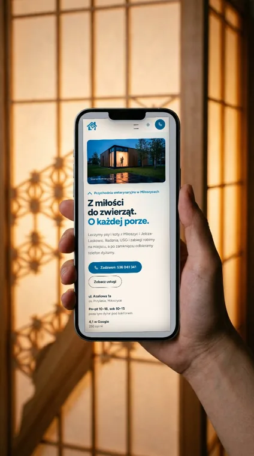
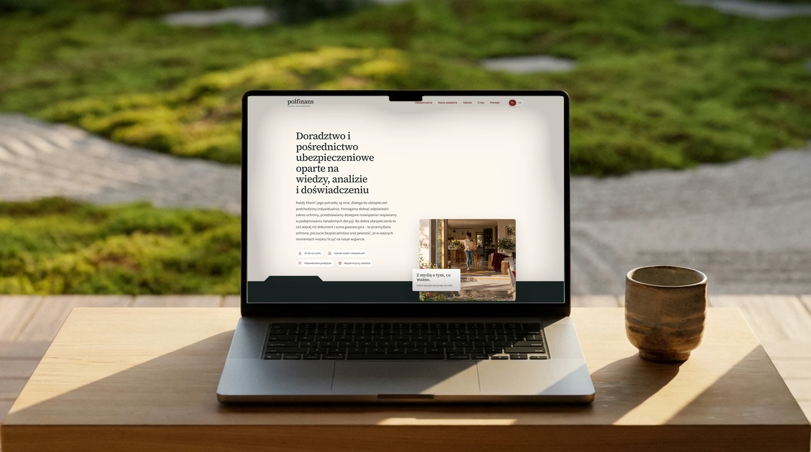
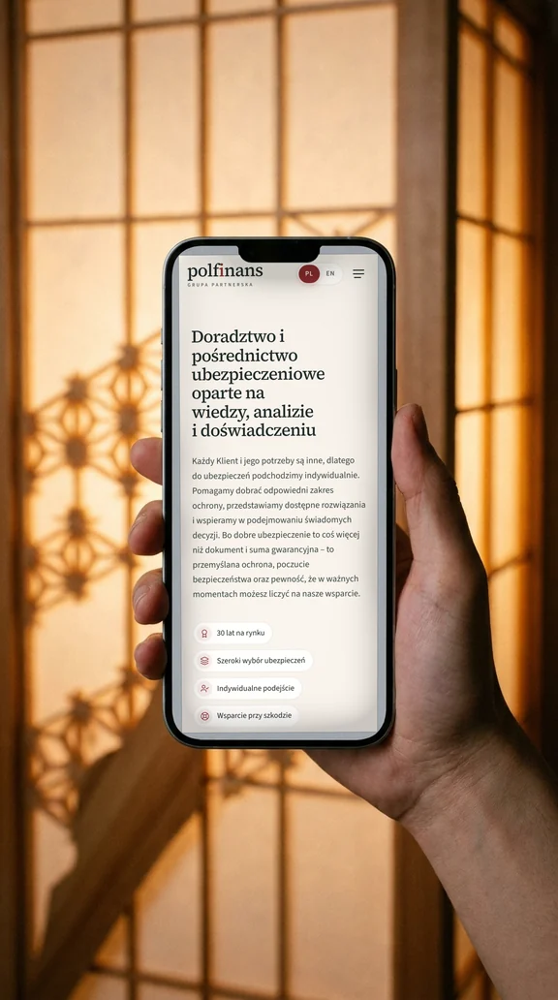
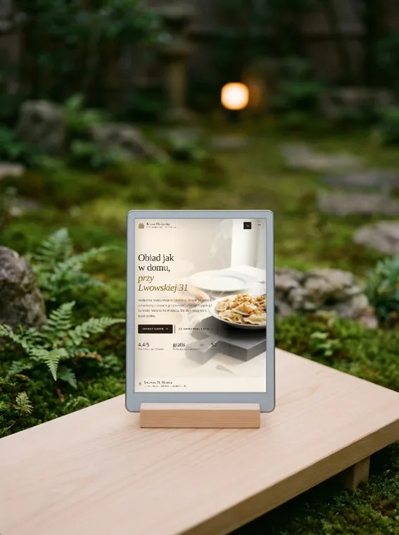
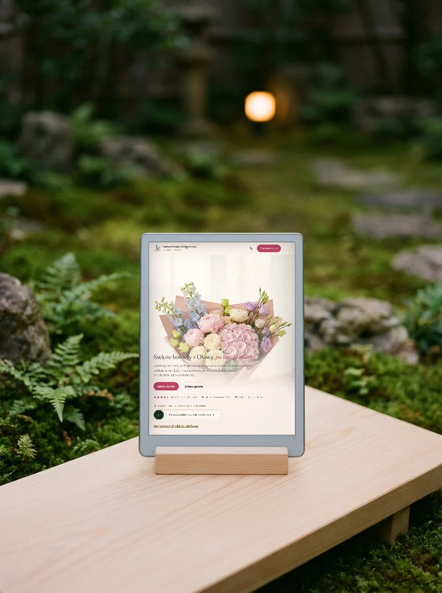
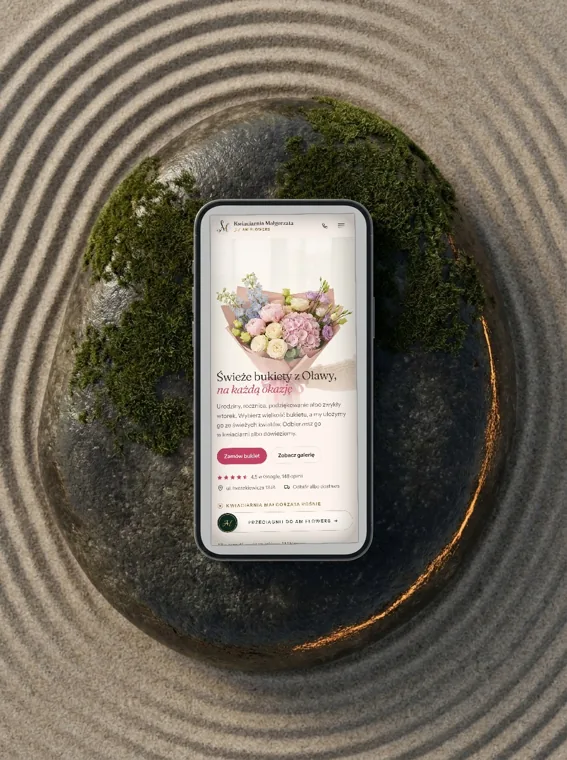
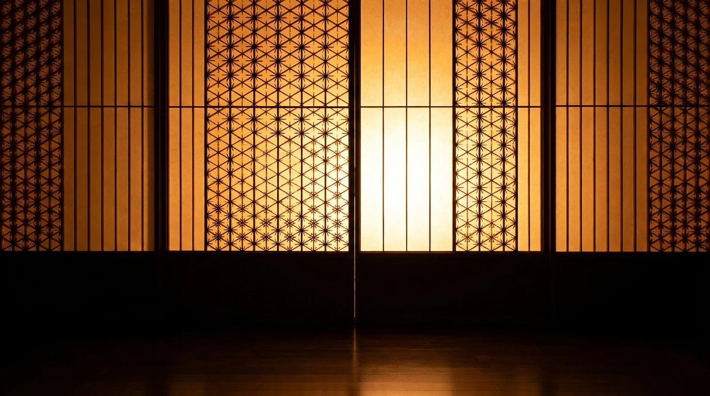
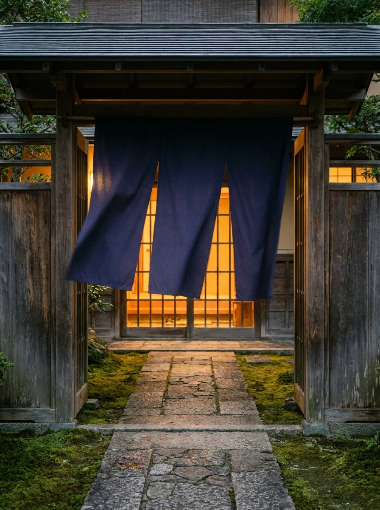

Twój partner technologiczny: od prostej wizytówki po zaawansowane systemy.
Robię strony, programy i automatyzacje dla firm z Oławy, Oleśnicy, Wrocławia i całej Polski. Najpierw poznaję Twoją firmę, potem buduję to, czego jej brakuje.
Pracuję na miejscu w regionie i zdalnie w całej Polsce.
- Oława
- Oleśnica
- Wrocław
- Miłoszyce
- cała Polska
Każda firma dostała jeden własny pomysł.
Najpierw czytam opinie i oglądam miejsce. Z tego, czym firma się różni, robię jedną rzecz na stronie, którą klienci zapamiętają.


Eskander
Przychodnia weterynaryjna, MiłoszyceStrona przychodni weterynaryjnej: usługi, godziny i dojazd w jednym miejscu. Po zamknięciu sama przechodzi w tryb nocny i pokazuje numer dyżurny.
Zobacz stronę

Polfinans
Multiagencja ubezpieczeniowa, WrocławStrona rodzinnej multiagencji z 30-letnim stażem. Prowadzi przez sytuacje z życia: dom, samochód, firma, podróż, a przy szkodzie osobną ścieżką krok po kroku.
Zobacz stronę

Brama Oleśnicka
Kuchnia domowa, OleśnicaStrona restauracji z kuchnią domową i kartą dań wygodną na telefonie. Na wejściu otwiera się jak brama: rysuje się złoty łuk, a skrzydła rozjeżdżają na boki.
Zobacz stronę

Kwiaciarnia Małgorzata
Kwiaciarnia ze sklepem, OławaStrona kwiaciarni ze sklepem: koszyk i zamówienie w 3 krokach. Suwak z kurtyną przenosi do nowej marki premium AM Flowers.
Zobacz stronęStrona to dopiero początek.
Zaczynasz od strony. Gdy firma rośnie, dokładam programy i automatyzacje, które pracują po godzinach.

Strony internetowe
Wizytówki, strony firmowe i sklepy, wygodne w obsłudze na telefonie.
- projekt od zera, bez szablonu
- zdjęcia, teksty i SEO lokalne
- od 2 000 zł netto

Aplikacje i programy
Rezerwacje, wyceny, ewidencja i panele szyte pod Twoją pracę.
- panel dla Ciebie i pracowników
- działa w przeglądarce i na telefonie
- wycena po rozmowie
Automatyzacje
Zgłoszenia, wiadomości i zestawienia, które dzieją się same.
- formularz → kalendarz → SMS
- zamówienia → faktura → mail
- wycena po rozmowie
Siedem kroków, jedna osoba.
Wiesz, co dostaniesz i ile to kosztuje, zanim zaczniemy. Zmiany w trakcie są normalne, omawiamy je od razu.
- 01Poznanie
Rozmowa
Telefon albo spotkanie w regionie. Mówisz, czego potrzebujesz, a ja pytam o klientów, godziny pracy i to, co dziś zabiera Ci czas.
DostajeszNotatka z ustaleniami i wstępny zakres
- 02Poznanie
Research
Czytam opinie o Twojej firmie, oglądam miejsce i sprawdzam, jak pokazuje się konkurencja w okolicy.
DostajeszWnioski: co klienci chwalą i czego szukają
- 03Poznanie
Jeden pomysłSerce procesu
Z tego, czym firma się różni, wybieram jedną cechę strony, którą klienci zapamiętają.
DostajeszWyróżnik strony opisany w dwóch zdaniach
- 04Budowa
Projekt
Pokazuję wygląd strony, zanim powstanie kod. Poprawiamy go razem, aż będzie Twój.
DostajeszProjekt do akceptacji i stała cena
- 05Budowa
Budowa
Koduję od zera, bez szablonu. Dostajesz link do wersji roboczej i widzisz postępy na bieżąco.
DostajeszDziałająca wersja robocza pod linkiem
- 06Start
Publikacja
Podpinam domenę, zgłaszam stronę do Google i sprawdzam ją na telefonach.
DostajeszStrona pod Twoją domeną, widoczna w Google
- 07Start
Opieka
Po publikacji zostaję. Co miesiąc poprawiam drobiazgi i dodaję małe ulepszenia.
DostajeszStały kontakt z tą samą osobą
Kwota zmienia się tylko wtedy, gdy zmienia się zakres.
Odbieram sam, nikt nie przekazuje Cię dalej.
Ta sama osoba poprawia stronę za rok.

Automatyzacje ułatwiają wykonywanie pracy i ściągają z Twoich barków żmudne czynności.
Programy i automatyzacje robią powtarzalną pracę, kiedy Ty zamykasz firmę. Oto trzy przykłady z małych firm.
Rezerwacje bez telefonu
Klient wybiera termin na stronie, wizyta trafia do Twojego kalendarza, a dzień wcześniej dostaje przypomnienie.
Wt 23:40Przypomnienie wysłane
Zamówienia bez przepisywania
Zamówienie ze sklepu od razu tworzy fakturę i wiadomość dla klienta. Nic nie przepisujesz ręcznie.
Nd 21:15Faktura u klienta
Raport, który się pisze sam
W piątek rano dostajesz zestawienie tygodnia: zamówienia, zapytania, terminy.
Pt 07:00Raport w skrzynce

Adrian Wojtasik. Rozumiem, potem buduję.
Studiuję psychologię i informatykę (projektowanie systemów inteligentnych). Psychologia mówi mi, dlaczego klient dzwoni albo zamyka stronę. Informatyka pozwala to zbudować. Wcześniej prowadziłem własną firmę, więc wiem, ile kosztuje czas właściciela.
Każdą realizację podpisuję swoim nazwiskiem.
Mniej elementów na ekranie, więc najważniejsze widać od razu.
Klient wie, co ma zrobić dalej.
Po publikacji co miesiąc coś poprawiam.
Wiesz, ile zapłacisz, zanim zaczniemy.
Ceny „od” są po to, żeby oszczędzić Ci czasu. Dokładną kwotę podaję po pierwszej rozmowie.
Projekt od zera, zdjęcia, teksty, SEO lokalne, publikacja.
Podstrony, sklep, płatności, rezerwacje.
Cena zależy od tego, ile ręcznej pracy chcesz oddać.
Zmiany, aktualizacje, małe ulepszenia.
Ceny poza wizytówką ustalam indywidualnie.

Opisz, czego potrzebujesz. Przygotuję wycenę.
Zadzwoń albo napisz. Odpowiadam sam, zwykle tego samego dnia.
791 632 675